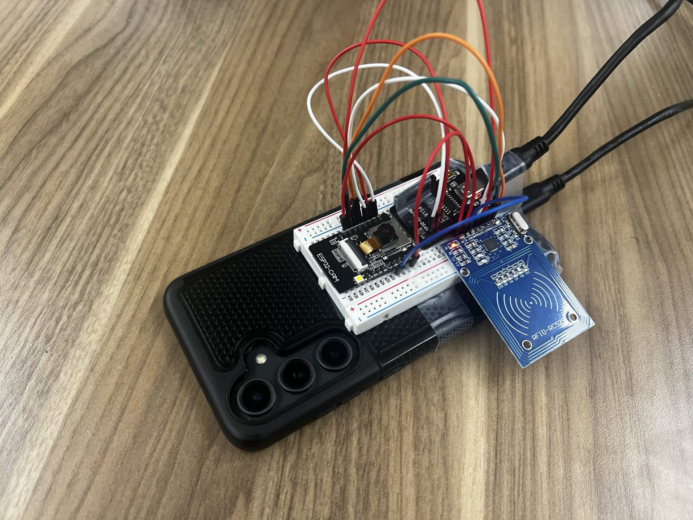
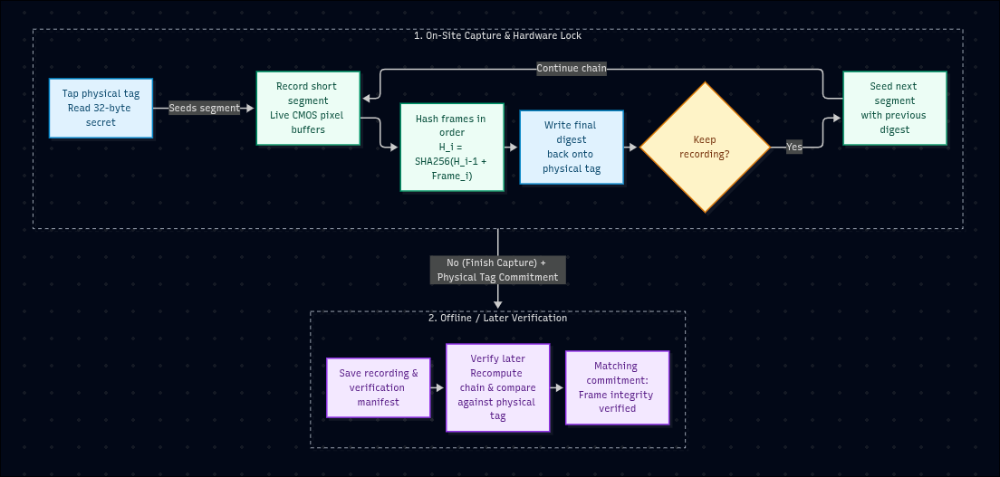
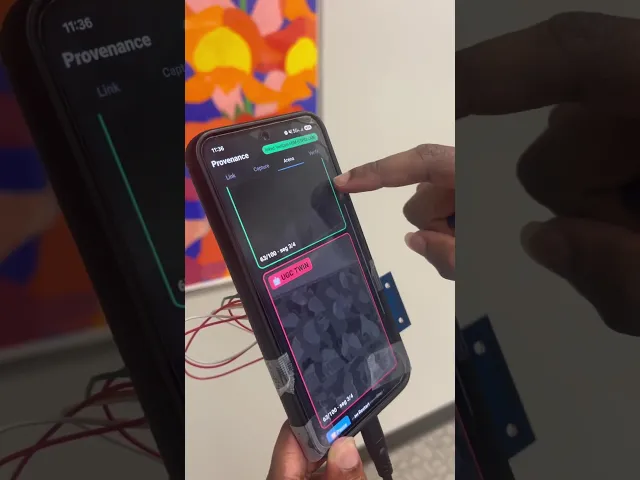
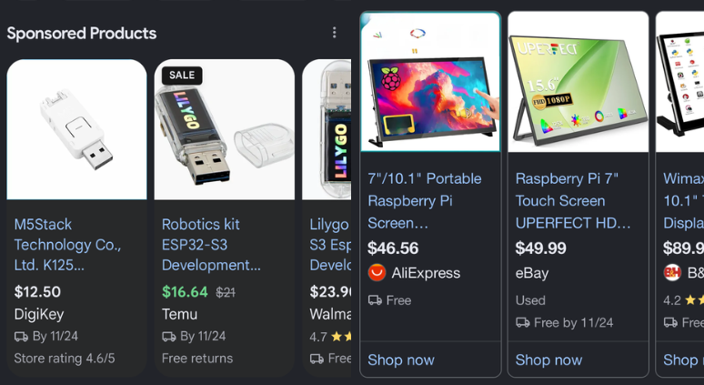
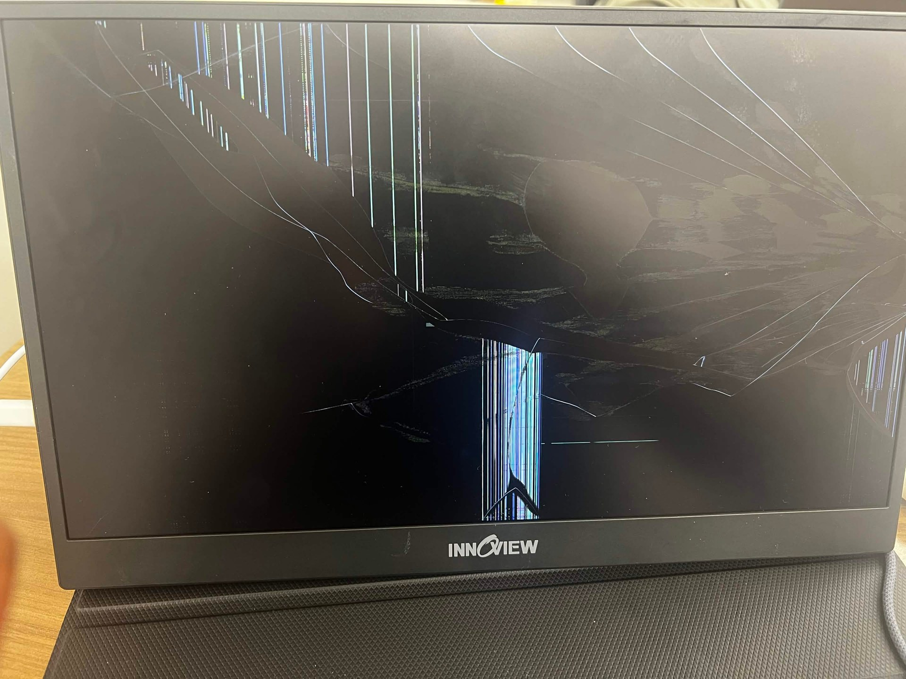
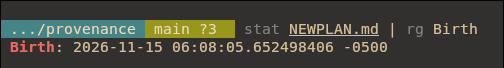

provenance
How do you actually trust anything you see on the internet?
This is a submission for the MLH x DEV Writing Challenge
Trying to spot something that looks AI-generated isn't a reliable answer. My work at an AI UGC (user generated content) company, Magic Hour, shows me firsthand about how indistinguishable AI video can be to a non skeptical human eye. In addition to that, these video models are just getting better and more accessible, as if our parents didn't already believe Will Smith would eat spagetti that sloppily.
A large driving force in this innovation is the profit incentive to generate perceptually isomorphic video:
This is relatively harmless if the purpose is just to market overpriced frothy drinks at a low cost, but the problem arrives when malicious actors use this technology to cause all types of harm.
So how do we escape the Matrix? Considering that not even generative models/apis watermarking their outputs is enough, since someone who knows enough about the watermark, or about signal processing can undo it, it seems like we are out of luck. But alas, a beacon of light is found in the same thing that got us into this mess: math.
Over the weekend at Hack The Nest at Eastern Michigan University, I wanted to solve this problem from the recording side: establish a verifiable capture history while the camera is running, rather than inspect a finished video and guess where it came from, as current approaches tend to do (see "deepfake detection").
The "how"

That's the inspiration that led my teammate, Nitin, and I to build Provenance. The app starts with a physical RFID tag’s secret key and hashes live camera pixel buffers in sequence, with each hash depending on the previous and current frame’s contents. The resulting digest is written back onto the tag, binding the 1.1 second video segment to its state at capture. Changing, removing, or rearranging a frame in that segment breaks verification. Each new segment continues that chain rather than starting an independent recording. That lets the video run beyond 1.1 seconds while preserving its connection to the earlier footage and the original tag state.
The 1.1 second window was chosen to make AI generation impractical inside a segment. A video gen API needs at least multiple seconds to return usable footage, so it can't produce frames within that window, and can't forge a valid chain afterward without the tag's secret. Segments are kept short so that recording and commitment finish together before the digest is written back to the tag.

The distinction is important because a hash of an uploaded file only tells you whether that file changed afterward. It tells you nothing about how the file was created. Provenance starts the chain inside the capture process
That process is connected to a physical RFID tag. An ESP32 reads the card's existing state to seed the chain, then writes the resulting commitment back onto it. The card gives us a physical record to check against later, the frame-by-frame capture chain binds the footage together. In theory, though, the algorithm is key agnostic, meaning that you could use something like a passkey on your phone (but that gets more into Provenance's identity verification capabilities rather than the verifiable physical capture aspect).
Ultimately, it doesn't matter if you understand the implementation details. Just know, the cryptographic algorithms give a mathematical guarantee that video came from a camera feed. Now, you can rest easy knowing that Will Smith probably has much better table manners.
Demo

Watch the demo: https://youtu.be/_rUICgSALcQ
Shortcomings
- The segment limitation adds a some overhead where the final video must be stitched together from the segments. This is why there was flickering on the first playback of the videos in the demo.
- Establishing that those bytes came from a physical camera also depends on trusting the capture app. Our prototype enforces that camera-only path at the app level, but doesn't know that a device is not compromised. To be honest though, learning a bit about kernel level anti-cheats makes me feel like even that's an impossible ask, so it would likely have to be implemented at the hardware level.
- Our second limitation is that verification is tied to the raw evidence we capture, not to an arbitrary upload. Every website that doesn't expressly make money from storing your files will transcode uploaded videos, changing resolution, bitrate, and codec for efficiency, which alters the pixel bytes and breaks the chain. Sharing or posting captured footage elsewhere means the original evidence file must accompany it, since a re-encoded version won't verify against the tag. Unlike the other limitation, this is a lot easier to overcome with either a custom codec (likely based on H.265 with an agreement on sites to not reencode these videos) or keeping evidence in video metadata combined with public keys signatures.
Partner Technologies
We used Vultr, Tiger Data, and Cursor/Grok Bot for different goals. Tiger Data was the backend that stored verification data so you could check videos at any time, and Grok Bot was set up using cursor agent to manage an S3 bucket automatically, checking the validity of its video contents. Vultr was for the backend, with Caddy handling HTTPS and reverse-proxying requests to the application server. HTTPS matters here because the browser capture app needs a secure context for camera access, Web Bluetooth, and Web Crypto.
MLH Hardware Sidenote
Getting the hosted app reachable was one problem. Getting our Raspberry Pis reachable without working monitors (see "Hackathon Experience" section...) was another...
I built an ESP32-S3 dongle to solve that second problem. The S3 I had was a programmable usb stick, which allowed me to turn it into a USB network adapter for the Pi, using the ESP32's wifi. This part is tangential to our project, but potentially important for the future of MLH hadware at hackathons. The dongle's screen showed that address, letting me connect through SSH and/or VNC once those services were enabled.
With the event's wifi credentials configured on the dongle, I could bootstrap a Pi without attaching a keyboard, monitor, or Ethernet cable.

I'd like MLH to consider something like this for future hackathons that provide raspberry pis. Organizers could prepare the dongles in advance, and hackers could connect remotely instead of hunting down the right micro-USB to HDMI adapter and a spare display. In addition to being easier, as agents can manage the pi, it is also more economic. A portable monitor by itself costs upwards of 2-3x that of the dongle, and may require another power outlet. I'm sure that other hardware hackers have at least one raspberry pi nightmare story, as I have multiple.
Hackathon Experience
Nitin and I spent a lot of time trying not to give up this weekend...

When I arrived, I discovered that my portable monitor's screen was broken, as I mentioned before. We also didn't have the power cable for Nitin's monitor. Before we could get started with our original idea, we were already struggling to access our hardware. Our original idea came about after reviewing tracks, and just having a casual conversation around lunchtime, when me and Nitin came up with the idea to use an EEG as a memory layer for agents. You would cure Claude's grep addiction by adding things to your context just by thinking about them. Though in retrospect, if I had to bet between millions of years of evolution and a 50 year old program written by C autists, my money is on the one that didn’t forget the monitor’s power cable.
We couldn't properly start until around 10 p.m. (most hackathons are 12pm Sat - 12pm Sunday), when the PiEEG hardware arrived. The g.tec hardware was lost in transit due to FAA flight groundings delaying its arrival, so anyone trying to use an EEG that weekend was wrought with tribulation.
Then we couldn't get the PiEEG Octopus 16 working. We spent another eight hours trying to make it work, bringing our total investment in the original idea to roughly 18 hours before we had to accept that we couldn't complete it.
Then at 6 a.m., feeling exhausted and despondent, I decided to "give up". But instead of just leaving, which I did deeply consider the whole weekend, I decided to give up on making a project for the hackathon. I chose to make a project for myself. This idea of hardware level verification of video is something I've thought about for a bit, so I was actually passionate and ready to start working on it.. 6 hours before it was due...

Even after that pivot, I still needed to solder the RFID kit. I had neglected to check this before hand, which jeopardized the project since the breadboard had tentative connection with the scanner with just jumpers alone.
After the bad-luck streak we were on, we were finally afforded some good fortune. I went around and asked another team if MLH had a soldering kit (out of pure desperation) and he must have misheard me, because he proceeded to lend his entire soldering kit he brought, saving our project. He also took the time to give me a rundown on how to use it, which was as humbling as it was helpful.
That's one of the things I remember most about the event. Though it can feel embarrassing to admit that you are inexperienced with something, and humiliating to be shown that you are, it's that exact ignorance that proves there's still more opportunity to grow. The curiosity and drive to improve I get from being shown my inadequacies is what lead me to learn math, programming, pretty much everything I'm passionate about in the first place, and this was no exception. In addition to the other people that stimulated my growth in the past, I'm also grateful to the hacker from the KAI team (who got 1st over us, figures) for giving me more than just his soldering iron.
In the face of what felt like endless trials, Nitin and I stayed resolute and got a 2nd place finish because we didn't give up and fully submitted to our passion, in addition to like 12 redbulls & a codex reset.